Линейные модели финансовых серий (AR)
“Количественные финансы”
Салихов Марсель (marcel.salikhov@gmail.com)
2017-09-23
Цели лекции
- понять, что такое автокорреляция (serial correlation)
- понять базовые принципы построения моделей временных рядов
- понять устройство модели случайного блуждания (random walk)
- понять основные принципы авторегрессионных (AR) моделей
- изучить идентификацию параметров моделей с помощью коррелограмм (ACF)
- научиться строить AR-модели в R
Автокорреляция
- Когда мы работаем с финансовыми данными, обычно мы хотим научиться либо прогнозировать либо, либо симулировать их (к примеру, для риск-менеджмента). Для того, чтобы строить прогнозы или симуляции, необходимо иметь модель серии.
- Модель – это упрощенное представление о реальности. Мы хотим, чтобы модели наши модели инкорпорировали особенности серий, которые наблюдаются эмпирически.
- Часто в финансовых сериях последовательные точки наблюдений влияют друг на друга в определенной степени – имеют корреляцию. С точки зрения количественного анализа задача состоит в том, чтобы идентифицировать и структурировать эти корреляции.
- Содержательно эту зависимость можно представить как распространение информации. Инвесторам требует какое-то времени, чтобы оценить и интерперировать поступающую информацию. По этим причинам доходности в момент времени \(t\) могут быть связаны с доходностью в момент времени \(t-1\). Таким образом, в серии сохраняется определенная “память”.
- Адекватное моделирование этой корреляции может существенно улучшить возможности прогнозирования и для более сложных моделей.
- Если последовательные наблюдения во временном ряде скоррелированы между собой, то мы говорим, что в ряде есть серийная корреляция (или автокорреляция)
Автокорреляция - определение
Автокорреляция с лагом \(k\) или \(\rho_k\) определяется автоковариацией, нормализованной на дисперсию ряда:
\[\rho_k = \frac{C_k}{\sigma^2} \] Автоковариация временного ряда с лагом \(k\) определяется как
\[C_k = E[(x_t - \mu)(x_{t+k}-\mu)] \] где \(\mu\) – это ожидаемое значение (среднее) временного ряда. Ковариация определяет степень линейной зависимости между переменными, то есть ковариация говорит нам на сколько переменные изменяются вместе. Корреляция может не учесть нелинейную зависимость, которая есть в серии.
На практике мы не знаем истинных значений этих параметров (среднего, дисперсии, коварации) и вынуждены оценивать выборочные значения - по имеющейся у нас выборке.
Коррелограмма
- Коррелограмма – это график, на котором отражены значения выборочной автокорреляции с последовательными лагами. Этот график позволяет увидеть структуру автокорреляции на каждом лаге.
- Основное использование коррелограммы – визуально находить автокорреляцию. Потом мы будем “убирать” ее с помощью оцененной (fitted) модели.
- Коррелограмма остатков модели позволяется оценивать “остаточную” автокорреляцию и понять, необходимы ли дальнейшие доработки модели.
- В R коррелограмма строится с помощью функции
acf (или forecast::Acf). В большинстве статистических программ также реализован этот функционал.
Коррелограмма последовательно нормально распределенных случайных величин
set.seed(123)
w <- rnorm(100) ## 100 нормально распределенных величин со средним = 1 и дисперсией = 1
acf(w)
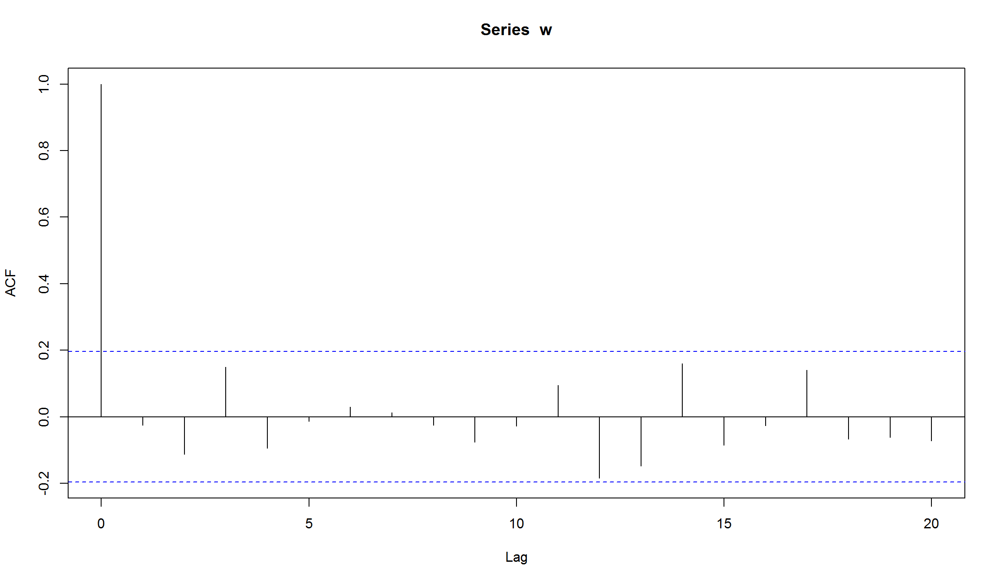
- На лаге 0 коррелограмма всегда имеет значение 1 (корреляция наблюдений с самими собой)
- Прерывистые синие линии означают границы на которых мы имеем свидетельства против нулевой гипотезы, что корреляция на этом лаге равна нулю (на 5% уровне).То есть граница позволяет нам оценивать “статистически значимое” отличие корреляции от 0. На практике мы смотрим на те лаги, которые пересекают прерывистые линии (однако надо иметь в виду, что 5% этих лагов должны пересекать границы в любом случае!)
- Коррелограмма также позволяет оценивать сезонные эффекты (к примеру, автокорреляция с лагом 12 для месячных данных)
Коррелограмма для линейного тренда
w <- seq(1, 100)
layout(1:2)
plot(w, type="l")
acf(w)
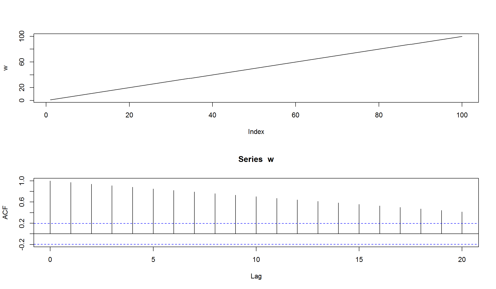
- АСF снижается линейным образом по мере увеличения лагов
- Коррелограмма такого вида указывает на наличие линейного тренда в серии
Коррелограмма для повторяющейся последовательности
w <- rep(1:10, 10)
layout(1:2)
plot(w, type="l")
acf(w)
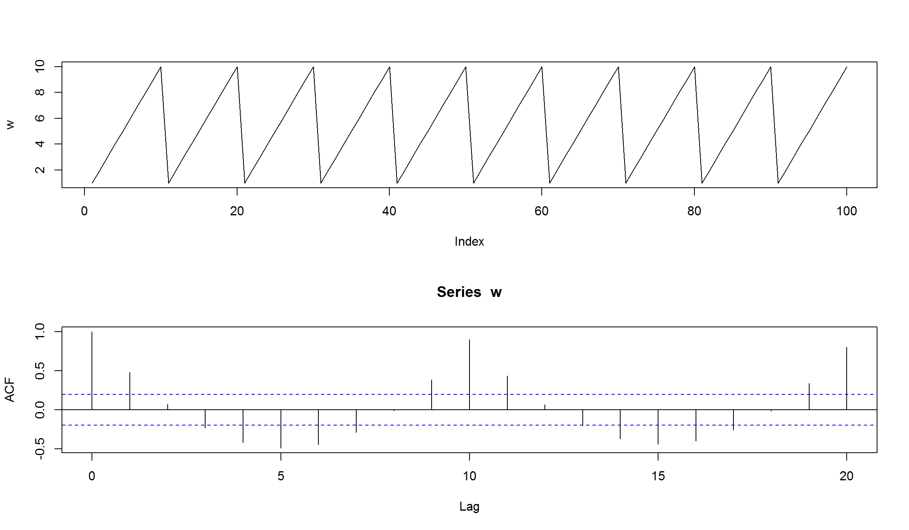
- ACF имеет пики на значениях 10 и 20 (наш исходный ряд имеет цикл = 10)
- На значениях лагов 5 и 15 отрицательная корреляция равная -0,5
- Коррелограмма подобного вида указывает на наличие сезонной (периодической) компоненты в серии
Белый шум
- Базовый подход к построению модели временного ряда – это получение в результате оценки модели остатков, в которых отсутствует автокорреляция.
- Если \(y_t\) – наблюдаемое значение в момент времени \(t\), а \(\hat{y_t}\) – предсказанное моделью значение, то остаток (residual)
\[x_t = y_t - \hat{y_t} \] Рассмотрим временной ряд вида \({w_t: t=1,\ldots,n}\). Если элементы ряда \(w_t\) являются независимыми одинаково распределенными (i.i.d.) величинами со средним (mean) равным 0 и дисперсией (variation), равной \(\sigma^2\), и отсутствием автокорреляции (\(Cor(w_i, w_j) \neq 0, \forall i \neq j\)), тогда серия \(w_t\) представляет собой белый шум (white noise).
Пример гауссовского белого шума:
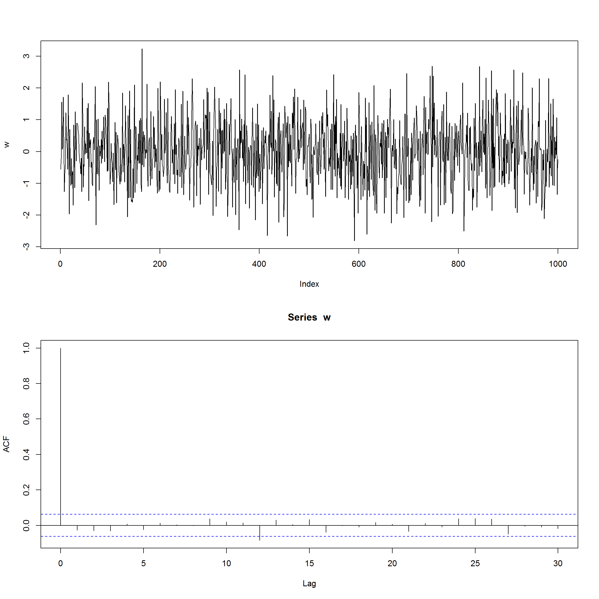
Модель случайного блуждания (random walk)
- Модель random walk – это модель временного ряда, в которой текущее значение равно предыдущему значению плюс случайная компонента (белый шум).
\[ x_t = x_{t-1} + w_t \]
- Случайное блуждание – это просто сумма отдельных белых шумов.
set.seed(123)
x <- w <- rnorm(1000)
for (t in 2:1000) x[t] <- x[t-1] + w[t]
layout(1:2)
plot(x, type="l")
acf(x)
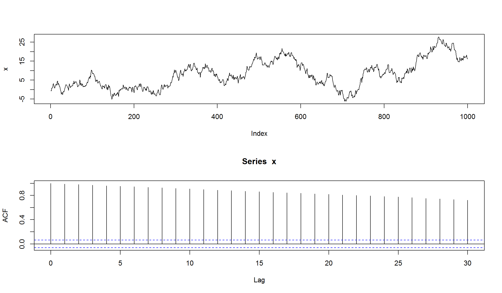
Модель random walk для финансовых данных
#getSymbols('MSFT', src='yahoo')
acf(diff((Ad(MSFT))), na.action = na.omit)
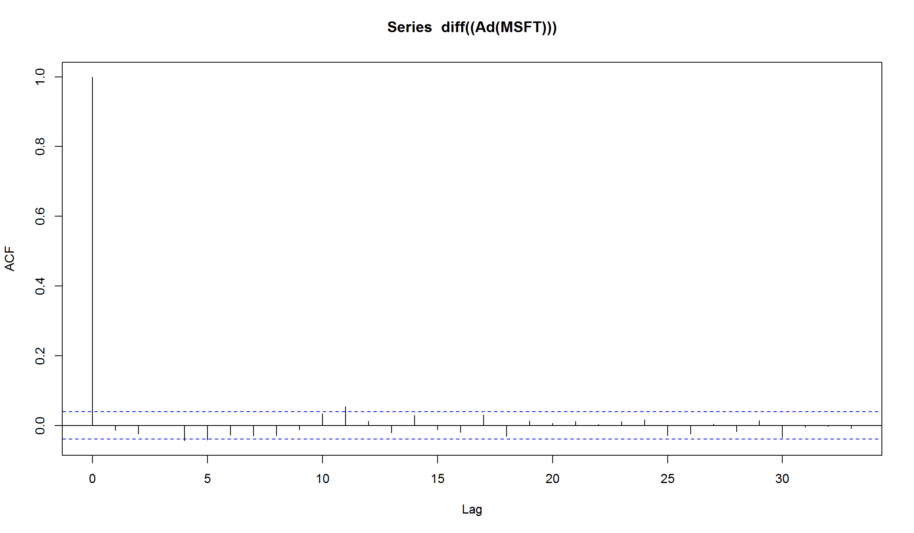
- Большинство пиков лагов не отличаются от нуля на 5% уровне (но есть некоторые, которые немного выше этого уровня, к примеру k= 11 )
- Но основе коррелограммы мы можем заключить, что модель случайного блуждания адекватно оценивает изменение скорректированных цен для акций Microsoft.
АR (авторегрессионная) модель
- Авторегрессионная модель, или \(AR(p)\) модель, создается путем регрессирования временного ряда на собственные предыдущие значения (лаги).
- Простейшей формой является AR(1), в которой используется только один предыдущий лаг.
- AR(1) модель для серии \(x_t\) имеет следующий вид:
\[x_t = b_0 + b_1 x_{t - 1} + \epsilon_t\]
- Модель AR(p) имеет следующий вид:
\[x_t = b_0 + b_1 x_{t-1} + b_2 x_{t - 2} \ldots + b_p x_{t - p} + \epsilon_t\]
Допущения для моделей AR
Для правильного функционирования AR-моделей исходные временные ряды должны быть стационарными. На практике это означает выполнение трех условий:
- Ожидаемое значение временного ряда является постоянным и конечным, то есть \(E[y_t] = \mu\) и \(\mu < \infty\) для всех значений \(t\)
- Дисперсия временного ряда является постоянной и конечной для всех периодов
- Ковариация временного ряда с самим собой для любого фиксированного количества периодов является постоянной и конечной.
\[cov(y_t, y_{t - s}) = \lambda, |\lambda| < \infty, \lambda = {constant}, \\ t = 1, 2, \ldots, T; s = 0, \pm 1, \pm 2, \ldots, \pm T \]
- Если эти условия не выполняются, тогда результаты оценки модели не будут иметь практического смысла (оценки параметров будут смещенными, и любые тесты для модели не будут достоверными!)
Обоснование AR-модели
Вспомним, что модель случайного блуждания (random walk) имеет следующий вид:
\[x_t = x_{t-1} + w_t \] то есть, каждый элемент \(x_t\) зависит только от своего предыдущего значения \(x_{t-1}\) и случайной компоненты белого шума (white noise)
- Авторегрессионная модель – это просто расширение модели случайного блуждания, которая включает несколько лаговых компонент и коэффициент при предыдущем лаге не обязательной равен 1.
- Модель является линейной, так как объясняемое значение линейным образом зависит от своих предыдущих значений
- Модель AR – это регрессионная модель, в которой прошлые значения используют как предикторы.
- AR-компонента в финансовых данных указывает нам на то, что серия имеет трендовое (trending) или возвращающееся к среднему (mean reversion) поведение.
Симуляция AR(1)
Сгенерируем самостоятельно AR-процесс со значением \(b_1\) = 0.7
set.seed(123)
ar1 <- w <- rnorm(100) # создадим белый шум
for (t in 2:100) ar1[t] <- 0.7*ar1[t-1] + w[t]
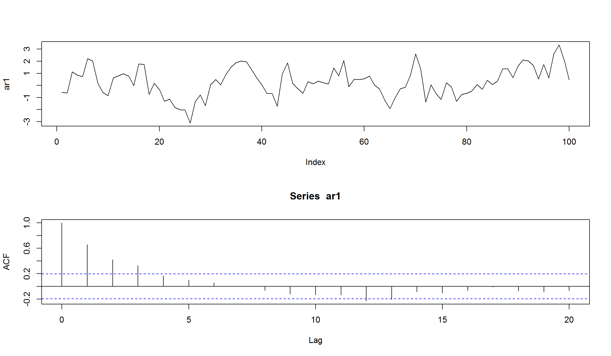
- попробуем оценить модель, с тем чтобы “восстановить” исходные параметры
- В R для оценки AR-моделей можно использовать функцию
ar.
ar1_est <- ar(ar1, method = "mle", se.fit=TRUE)
ar1_est$order
[1] 1
[1] 0.6558341
ar1_est$ar + c(-1.96, 1.96)*sqrt(ar1_est$asy.var) ## доверительный интервал для параметра
[1] 0.5086898 0.8029784
Симуляция AR(1) c отрицательным параметром
попробуем параметр \(b_1\) = -0.6
set.seed(123)
ar1 <- w <- rnorm(100) # создадим белый шум
for (t in 2:100) ar1[t] <- -0.6*ar1[t-1] + w[t]
plot(ar1, type="l")
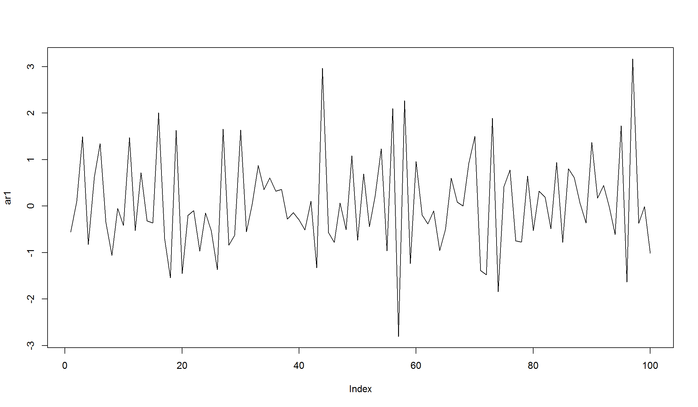
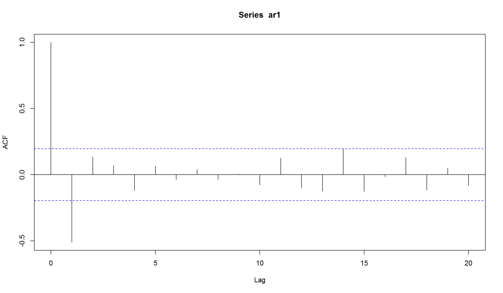

АR(2)
Рассмотрим теперь AR(2) модель, в которой используется два лага для моделирования текущего значения:
set.seed(123)
ar2 <- w <- rnorm(100)
for (t in 3:100) ar2[t] <- 0.666*ar2[t-1] - 0.333*ar2[t-2] + w[t]
layout(1:2)
plot(ar2, type="l")
acf(ar2)
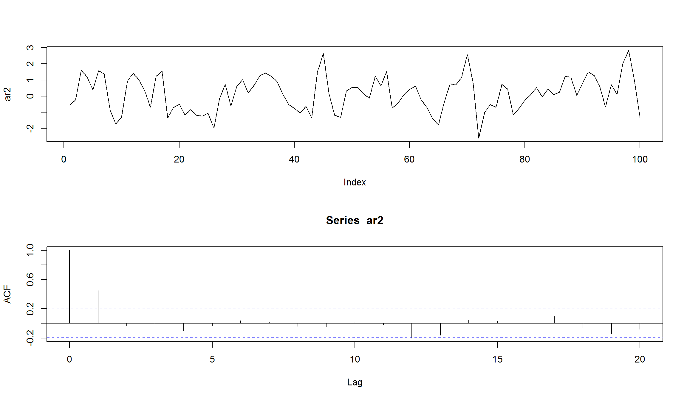
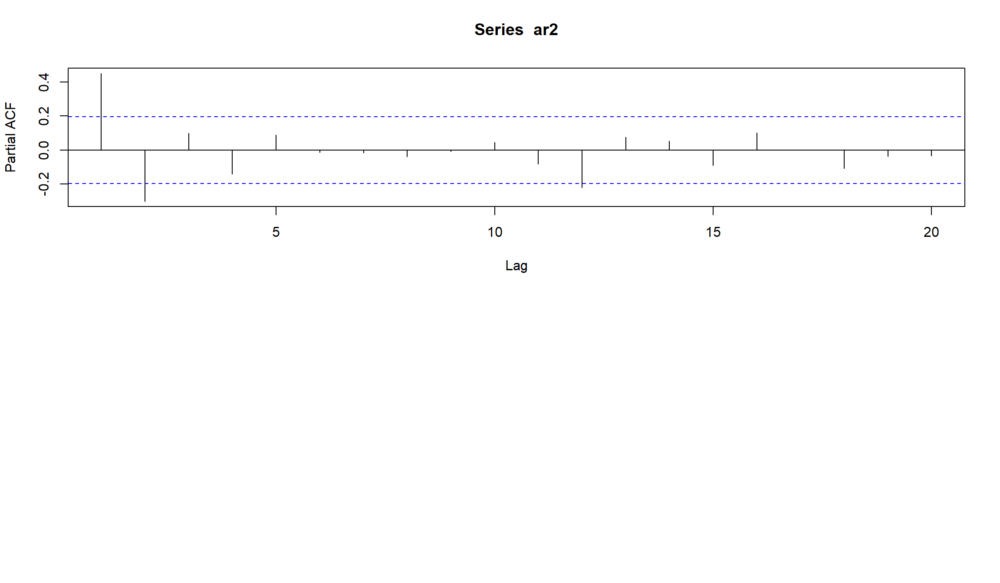
попробуем оценить параметры c помощью функции ar
ar2_est <- ar(ar2, method = "mle")
ar2_est$ar
[1] 0.6102312 -0.3230122
АСF для AR(1) и AR(2)

PАСF для AR(1) и AR(2)
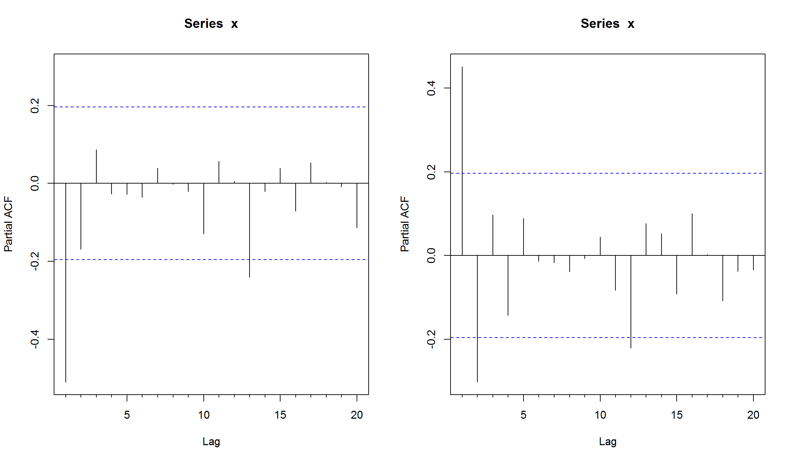
Оценка - использование AR-модели для цен на нефть
Пример – цены на нефть
library(quantmod)
getSymbols("DCOILWTICO", src = "FRED")
[1] "DCOILWTICO"
wti <- DCOILWTICO['2000::'] ## ограничим используемую выборку
plot.xts(wti)
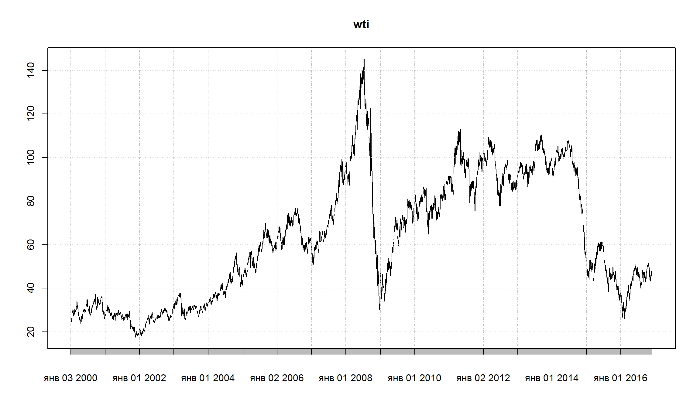
Использование AR-модели для цен на нефть (2)
посчитаем лог-доходности, чтобы перейти от нестационарной серии к стационарной (потенциально).
wti.rtn = diff(log(wti))
wti.rtn <- wti.rtn[complete.cases(wti.rtn),]
plot(wti.rtn)
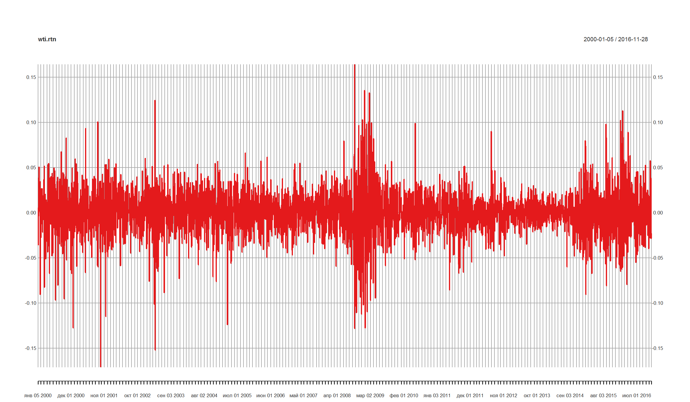
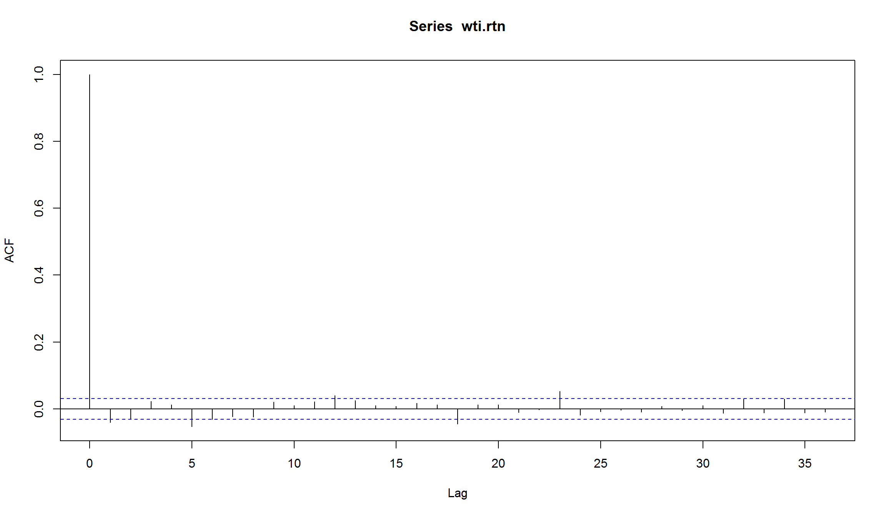
wti_ar <- ar(wti.rtn, na.action=na.omit)
wti_ar$order
[1] 23
Модель имеет 23 лага! Ограничим модель 2 лагами максимально.
wti_ar <- ar(wti.rtn, na.action=na.omit, order.max = 2)
wti_ar$order
[1] 2
[1] 0.6102312 -0.3230122
посмотрим на остатки модели
Остатки для AR(2)-модель цен на нефть
resid <- residuals(wti_ar)
plot(resid, type="l", col=2)
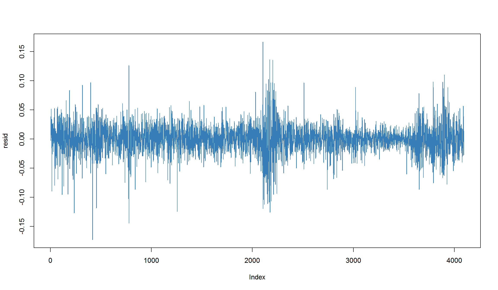
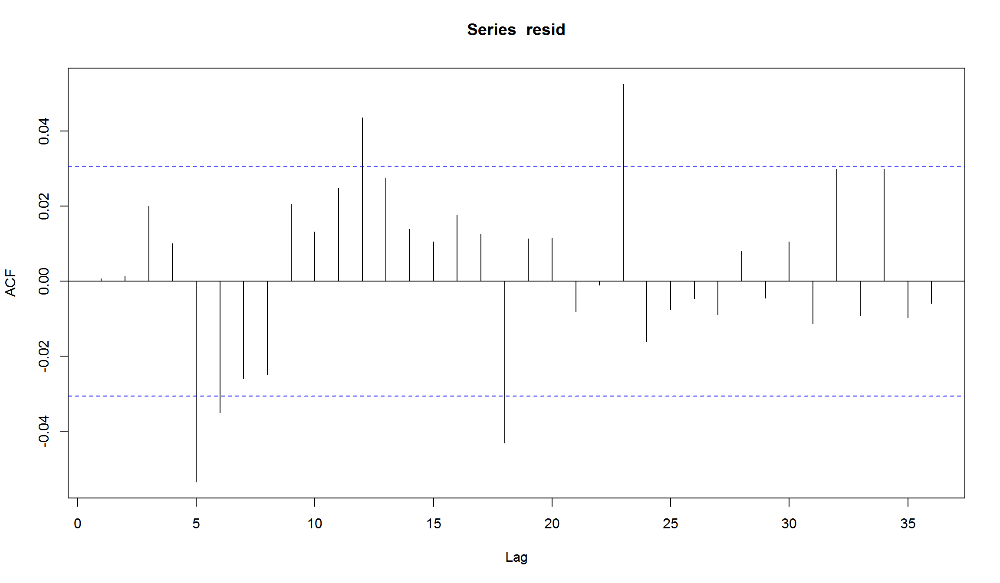
Судя по АСF остатков, AR(2) не очень хорошо подходит для моделирования динамики цен на нефть!
Остатки модели
- Остатки модели - остатки между расчетными величинами и фактическими значениями.
- Исследование остатков – важный шаг для оценки качества моделей.
- Хорошая модель “оставляет” после себя остатки, которые не имеют структуры.
Выводы
- Большинство финансовых серий имеют автокорреляцию.
- Учет автокорреляции важен для построения моделей и оценки статистических эффектов.
- Для оценки порядка модели AR можно использовать график PACF.
- Мы предпочитаем использовать более простые модели, которые имеют меньше параметров для того, чтобы избежать “подгонки” под данные (overfitting).
Использованные источники:
- “An Introduction to Analysis of Financial Data with R” (Ruey S. Tsay)
- “Statistics and Data Analysis for Financial Engineering” (David Ruppert & David Matteson)
- Analyzing Financial Data and Implementing Financial Models Using R (Clifford Ang)
- Forecasting Financial Time Series (Patrick Perry)
- Autoregressive Moving Average ARMA(p, q) Models for Time Series Analysis (Michael Halls-Moore)